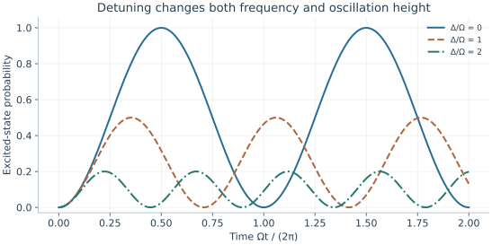
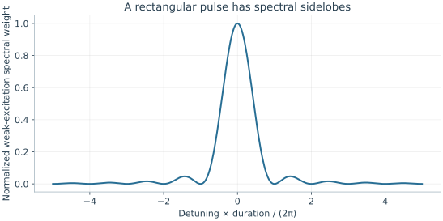

Starting point: Chapters 1–2; physical concepts and approximations are introduced as needed.
Anchor example: Calibrating a resonant pulse to produce a pi rotation.
This lesson includes explanations, worked examples, and problems with solutions. Advanced results whose proofs are outside the chapter are identified explicitly.
Inside a chosen two-level subspace, with the free evolution removed by a rotating frame, a qubit sits still. To compute we must move it, and the handle a laboratory has is an applied field that oscillates in time. Why should an oscillating field produce a clean rotation, and what goes wrong when the field is slightly off?
We first ask why only a drive at the transition frequency moves population. The answer, phase matching, gives resonance and the Rabi oscillation. Varying the strength and phase of the pulse then turns that oscillation into a rotation with a chosen angle and axis. Asking how a mistuned or mis-scaled pulse fails gives the control errors, and asking how a short pulse spreads in frequency gives leakage to neighbouring levels. Finally we ask how rotations are calibrated, and find that a change of reference phase can stand in for a Z rotation.
Our first question is why the frequency of a drive must match the transition.
3.1 Driven Transitions
A field that oscillates near the qubit frequency is the basic control. Why must the two frequencies match, and what does the qubit do while the field is on? Phase matching explains resonance and leads to the Rabi oscillation. Varying the strength and phase of the field then turns the oscillation into rotations with a chosen angle and axis.
3.1.1 Resonance and Rabi oscillations
Suppose a field at the device adds to the Hamiltonian a term proportional to some operator \(D\), with a strength that oscillates at angular frequency \(\omega_d\). For an electric-dipole drive, \(D\) is the dipole operator and the strength is the electric field. Within the qubit pair, and with a real entry \(\bra1D\ket0\), we write the added term as \(\hbar\Omega\cos(\omega_dt-\phi)X\), where \(\Omega\) measures its strength and \(\phi\) is its phase. Why should only a drive with \(\omega_d\) near \(\omega_{01}\) move population?
Look at the amplitudes. Without the drive, \(c_1\) turns as \(e^{-i\omega_{01}t}\) while \(c_0\) stays fixed. So we write \(c_0=b_0\) and \(c_1=b_1e^{-i\omega_{01}t}\), and \(b_0,b_1\) change only because of the drive. Start in \(\ket0\). While little population has moved, \(b_0\simeq1\), and the evolution law for \(c_1\) gives
Each instant adds a small complex contribution to \(b_1\). When an exponent turns, successive contributions point in different directions and nearly cancel, so their sum stays small. When an exponent stands still, every contribution points the same way and the sum grows steadily. The first term turns at \(\omega_{01}+\omega_d\), about twice the transition frequency, so it always averages out. The second turns at \(\Delta=\omega_{01}-\omega_d\). At \(\Delta=0\) it stands still, and \(b_1\) grows as \(-i(\Omega/2)e^{i\phi}t\).
So resonance is phase matching. The drive's own oscillation cancels the turning phase of the transition, and its pushes accumulate instead of averaging away, much as pushes in time with a swing build up its motion. A detuned drive adds contributions whose directions rotate at \(\Delta\), so over times longer than \(1/|\Delta|\) they average out.
This argument holds only while \(b_0\simeq1\). For the full dynamics we use the rotating frame at the drive frequency. The free part becomes \(-\hbar\Delta Z/2\). The drive term becomes \(\hbar\Omega\cos(\omega_dt-\phi)(\cos\omega_dt\,X+\sin\omega_dt\,Y)\). That product contains a slow part, \(\hbar\Omega(\cos\phi\,X+\sin\phi\,Y)/2\), plus parts oscillating at \(2\omega_d\). Dropping the fast parts, as phase matching justifies, is the rotating-wave approximation. It requires \(\Omega\) and \(|\Delta|\) to be small compared with \(\omega_d\), and other transitions to stay negligible. For \(\phi=0\),
This is the matrix whose transfer we bounded for a constant coupling between two mismatched levels. On resonance \(X^2=I\), so \(U=\cos(\Omega t/2)I-i\sin(\Omega t/2)X\), and starting from \(\ket0\),
The excited population \(P_1=\sin^2(\Omega t/2)\) swings between zero and one. This coherent swing is called a Rabi oscillation, and \(\Omega\), the angular frequency of the swing, is the Rabi frequency. The Hamiltonian was our physical assumption; the population curve follows from it by calculation.
3.1.2 Pulse area and phase
A real pulse is not constant: its strength rises and falls. What angle does it produce? On resonance and with a fixed phase, the Hamiltonian at every instant is a multiple of the same \(X\). Hamiltonians at different times then commute, so the short rotations about that axis simply add their angles. The total is the pulse area,
A π pulse, with \(\theta=\pi\), takes \(\ket0\) to \(\ket1\). A π/2 pulse makes the two populations equal. If \(\Omega/(2\pi)=1\) MHz, a constant π pulse lasts 0.5 μs.
What does the drive phase do? With phase \(\phi\), the drive term is \(\hbar\Omega(\cos\phi\,X+\sin\phi\,Y)/2\). Starting at zero, a pulse gives
The phase sets the relative phase of the two amplitudes and leaves the populations unchanged. If the phase changes partway through a pulse, the Hamiltonians at different times no longer commute, and adding areas is no longer enough.
Where does the rotation axis point? A pure state \(\cos(\vartheta/2)\ket0+e^{i\varphi}\sin(\vartheta/2)\ket1\) has expectation values \((\langle X\rangle,\langle Y\rangle,\langle Z\rangle)=(\sin\vartheta\cos\varphi,\sin\vartheta\sin\varphi,\cos\vartheta)\), which form a unit vector. This vector is called the Bloch vector, and the unit sphere it lies on is the Bloch sphere. We quote the standard fact that \(e^{-i\theta\,\mathbf n\cdot\boldsymbol\sigma/2}\), with \(\mathbf n\cdot\boldsymbol\sigma=n_xX+n_yY+n_zZ\), turns the Bloch vector by the angle \(\theta\) about the unit axis \(\mathbf n\). A resonant pulse of phase \(\phi\) thus turns the state about an axis at angle \(\phi\) in the equatorial plane \(z=0\).

All traces start in zero under the constant-drive two-state model. Resonance reaches full inversion; detuning imposes a ceiling that changing duration cannot remove.
Problem 3.1. What is the π/2-pulse duration at a 5 MHz Rabi rate?
Worked solution
50 ns. The angular rate is 2π·5 MHz, so Ωt=π/2.
3.2 Control Errors
A calibrated rotation assumes that the drive sits exactly on resonance with exactly the intended strength, and that nothing else responds. How does each assumption fail? Detuning tilts the rotation axis and caps the transfer, while a wrong amplitude over- or under-rotates. A pulse of finite length also contains a spread of frequencies, which can reach a neighbouring transition.
3.2.1 Detuning and amplitude error
What if the drive is slightly off resonance? The rotating-frame Hamiltonian \(\tfrac12(-\Delta Z+\Omega X)\) is a rotation about an axis tilted out of the equatorial plane toward \(Z\), at angular frequency \(\Omega_R=\sqrt{\Omega^2+\Delta^2}\). We already found its transfer from \(\ket0\):
Detuning speeds up the oscillation and lowers its maximum. At \(\Delta=\Omega\), the population never exceeds one half, and no choice of duration removes that ceiling.
What if the strength is wrong instead? A fractional amplitude error \(\epsilon\) turns an intended π pulse into the angle \(\pi(1+\epsilon)\). Its transfer is \(\sin^2(\pi(1+\epsilon)/2)=\cos^2(\pi\epsilon/2)\), so the population error is \(\sin^2(\pi\epsilon/2)\simeq\pi^2\epsilon^2/4\). The population error is quadratic in \(\epsilon\), while the angle error is linear. One pulse followed by a population measurement therefore hides the error. Repeating the pulse lets the angle errors add coherently, as amplitudes do when errors share a phase.
3.2.2 Pulse shaping and leakage
A pulse lasts a finite time \(T\). How strongly does it drive a transition it was not tuned to? The weak-drive argument for resonance answers this. If the unwanted level stays nearly empty, each instant adds to its amplitude a contribution proportional to \(\Omega(t)e^{i\Delta t}\), where \(\Delta\) is now the mismatch to the unwanted transition. So that amplitude is proportional to \(\int_0^T\Omega(t)e^{i\Delta t}dt\). Holding the starting amplitude fixed on the right-hand side in this way is called first-order perturbation theory. For a rectangular pulse the integral is \(\Omega Te^{i\Delta T/2}\operatorname{sinc}(\Delta T/2)\), where \(\operatorname{sinc}x=\sin x/x\).
The sinc first vanishes at \(|\Delta|T=2\pi\), so a shorter pulse responds over a wider range of mismatches. A pulse of length \(T\) has a frequency spread of order \(1/T\). This settles how much anharmonicity is enough. A pulse spares a neighbouring transition at mismatch \(|\alpha|\) only if \(T\) is long compared with \(1/|\alpha|\) and \(\Omega\) is small compared with \(|\alpha|\). Turning a pulse on and off smoothly reduces the side lobes of the sinc, but does not remove all leakage. The integral is a weak-excitation estimate, not the exact π-pulse dynamics, so close to a neighbouring transition a full multilevel calculation is needed.

The curve is sinc²(ΔT/2), normalized to its zero-detuning value. It describes a Fourier-weight estimate in weak excitation, not an exact resonant π-pulse probability.
Problem 3.2. If |Δ|=Ω, can a square pulse invert perfectly?
Worked solution
No. The maximum excited probability in this model is Ω²/(Ω²+Δ²)=1/2.
3.3 Gate Calibration
Each error has a signature, but a calibration must find the right pulse without knowing the errors in advance. How do we measure a rotation angle, and what sets the phase reference that later pulses use? Sweeping durations and repeating pulses finds the angle and exposes phase errors. Asking what a Z rotation physically requires then shows that a change of reference phase can replace it.
3.3.1 Rotation experiments
How do we find the duration of a π pulse? We could take the first large signal as full inversion, but a detuning ceiling or a readout error would mislead us. Instead we sweep the duration, fit the Rabi oscillation's frequency and offsets, and then test the predicted π and π/2 durations in new sequences. Repeating a pulse magnifies its angle error.
Which sequences test more than populations? Two π/2 pulses about X should act as one π pulse. If we shift the phase of the second pulse by π, its axis reverses, and it should undo the first. Each pulse alone gives the same populations, yet the two sequences end differently. So they test phase and coherence as well as amplitude. Repeating with a delay between the pulses reveals a frequency mismatch, because the relative phase then grows with the delay. Repeating while a neighbouring qubit is driven reveals crosstalk between the controls.
3.3.2 Frames and virtual phases
Do we need a physical pulse for every Z rotation? Define \(R_z(\lambda)=e^{-i\lambda Z/2}\). Direct multiplication gives \(R_z(\lambda)XR_z(-\lambda)=\cos\lambda\,X+\sin\lambda\,Y\), and hence
A rotation about the axis at phase \(\phi\) is an X rotation between two Z rotations. The same identity gives \(R_\phi(\theta)R_z(\lambda)=R_z(\lambda)R_{\phi-\lambda}(\theta)\). So a Z rotation followed by later pulses equals those pulses with every phase shifted by \(-\lambda\), followed by one final Z rotation. A final Z rotation does not change Z-basis outcome probabilities. A Z rotation can therefore be carried out by updating the phase reference of later pulses, with no physical pulse at all. This is called a virtual Z gate.
What has changed physically? Nothing in the qubit. The phase reference of every later control must change consistently, and so must the interpretation of every later phase-sensitive measurement. In a two-qubit operation the interaction phase can depend on that reference too. We therefore validate a frame update with an interference sequence, such as two π/2 pulses with a varied phase between them, since a Z-basis population measurement cannot see it.
Problem 3.3. Why is a successful zero-to-one pulse insufficient as a gate test?
Worked solution
Its phase action on superpositions may be wrong even when the output population is correct. An interference experiment is needed.
A drive on one qubit supplies every single-qubit rotation, but no product of such rotations entangles two qubits. What physical interaction can?
Worked model check. A drive has angular detuning twice its resonant Rabi strength. Can a longer pulse give 90% transfer in the isolated two-level model?
Worked solution
No. Its maximal transfer is \(\Omega^2/(\Omega^2+4\Omega^2)=1/5\). Duration changes the sine factor but cannot remove the detuning ceiling.
These exercises draw on the whole chapter. Attempt each question before opening a hint, explain your reasoning, then compare it with the worked solution.
A resonant pulse ramps linearly from \(0\) to a peak \(\Omega_0/2\pi=10\) MHz and back to \(0\), over a total of \(100\) ns (a triangle). Find its pulse area and the resulting excited population from \(\ket0\).
Hint 1
The area of a triangle is half its base times its height.
Hint 2
\(P_1=\sin^2(\theta/2)\).
Worked solution
\(\theta=\int\Omega\,dt=\frac12\times(2\pi\times10^7\ \mathrm{s^{-1}})\times(10^{-7}\ \mathrm s)=\pi\). It is a \(\pi\) pulse, giving \(P_1=\sin^2(\pi/2)=1\). Because the axis is fixed and the Hamiltonians at different times commute, only the area matters on resonance, not the shape, which is what lets smooth envelopes replace square pulses.
Starting from \(\ket0\), apply a \(\pi/2\) pulse with phase \(\phi=0\), and separately one with \(\phi=\pi/2\). Using \(\cos(\theta/2)\ket0-ie^{i\phi}\sin(\theta/2)\ket1\), write both states. Do their \(Z\) populations differ?
Hint 1
For \(\theta=\pi/2\), \(\cos\frac\theta2=\sin\frac\theta2=\frac{1}{\sqrt2}\).
Hint 2
\(-ie^{i\pi/2}=1\).
Worked solution
\(\phi=0\): \((\ket0-i\ket1)/\sqrt2\). \(\phi=\pi/2\): \((\ket0+\ket1)/\sqrt2=\ket+\). Both have populations \(\frac12,\frac12\), so a \(Z\) measurement cannot tell them apart; they differ by a relative phase of \(\pi/2\), which a later pulse or an \(X\)-basis measurement reveals. The drive phase selects the rotation axis.
A \(\pi\) pulse has a \(2\%\) amplitude error. Estimate its population failure \(\pi^2\epsilon^2/4\), and compare with the rotation-angle error itself.
Hint 1
\(\epsilon=0.02\).
Hint 2
The angle error is \(\pi\epsilon\).
Worked solution
The population failure is about \(\pi^2(0.02)^2/4\approx9.9\times10^{-4}\). The angle error is \(\pi\epsilon\approx0.063\) rad, and the wrong-state amplitude is about \(0.031\). A single population measurement at the \(10^{-3}\) level hides an amplitude error of a few percent, which repeated sequences expose.
Apply an intended \(\pi\) pulse with fractional amplitude error \(\epsilon\) a total of \(N\) times (odd \(N\)), starting from \(\ket0\). (a) Show that the probability of not ending in \(\ket1\) is \(\sin^2(N\pi\epsilon/2)\). (b) Evaluate it for \(\epsilon=0.01\) with \(N=1\) and \(N=21\). (c) Why is this sequence useful for calibration?
Hint 1
Rotations about the same axis add: total angle \(N\pi(1+\epsilon)\).
Hint 2
For odd \(N\), the ideal angle \(N\pi\) ends in \(\ket1\).
Worked solution
(a) The total angle is \(N\pi+N\pi\epsilon\). For odd \(N\), \(N\pi\) alone would end in \(\ket1\), and the extra \(N\pi\epsilon\) leaves probability \(\sin^2(N\pi\epsilon/2)\) in \(\ket0\). (b) \(N=1\): \(2.5\times10^{-4}\). \(N=21\): \(\sin^2(0.33)\approx0.105\). (c) The coherent angle error grows linearly with \(N\), so the signal grows as \(N^2\epsilon^2\): a \(1\%\) error invisible in one pulse becomes a \(10\%\) effect after \(21\). Fitting the error against \(N\) calibrates the amplitude far more precisely than a single Rabi curve.
A drive is slightly detuned, \(\Delta=0.1\Omega\). (a) Find the maximum transfer \(\Omega^2/\Omega_R^2\). (b) Find the transfer at the resonant \(\pi\) time \(t=\pi/\Omega\). (c) How does the transfer error scale with \(\Delta/\Omega\) for small detuning, and how could a frequency error of this size be detected?
(a) \(1/1.01\approx0.990\). (b) At \(t=\pi/\Omega\), \(P_1=\frac{1}{1.01}\sin^2\big(\frac\pi2\sqrt{1.01}\big)\approx0.990\): the timing mismatch costs almost nothing extra. (c) The error is about \((\Delta/\Omega)^2\), here \(1\%\), quadratic and therefore easy to miss in populations. A Ramsey sequence (two \(\pi/2\) pulses separated by a delay \(\tau\)) accumulates a phase \(\Delta\tau\) linearly in \(\Delta\), making a small frequency error visible.
In the weak-excitation estimate, a square pulse of duration \(T\) excites a transition detuned by \(\Delta\) in proportion to \(\mathrm{sinc}^2(\Delta T/2)\). (a) For \(\Delta/2\pi=200\) MHz, which durations put the unwanted transition at a zero of the response? (b) Evaluate the relative response at a nearby sidelobe peak, \(\Delta T/2\approx10.5\pi\). (c) Why is tuning \(T\) to a zero a fragile strategy?
Hint 1
\(\mathrm{sinc}(x)=0\) at \(x=n\pi\), \(n\neq0\).
Hint 2
\(\Delta T/2=n\pi\) gives \(T=2\pi n/\Delta\).
Worked solution
(a) Zeros occur at \(\Delta T/2=n\pi\), so \(T=n/(200\ \text{MHz})=5n\) ns: \(50\) ns, \(55\) ns, and so on. (b) At \(\Delta T/2=10.5\pi\), \(\mathrm{sinc}^2\approx1/(10.5\pi)^2\approx9\times10^{-4}\) of the zero-detuning weight. (c) The zero depends on the exact detuning and duration; a small drift in either moves the transition onto a sidelobe, and real pulses have rise times and nonlinear distortions. Smooth envelopes whose spectra fall off rapidly at all large detunings are more robust than relying on a zero of a square pulse.
Apply \(R_x(\pi/2)\) to \(\ket0\), then a \(\pi/2\) pulse about the axis \(\cos\phi X+\sin\phi Y\). (a) Show that the excited population is \(\cos^2(\phi/2)\). (b) Evaluate it at \(\phi=0,\pi/2,\pi\). (c) Explain how this sequence tests a virtual \(Z\) update.
Hint 1
At \(\phi=0\) the two pulses make a \(\pi\) pulse; at \(\phi=\pi\) the second undoes the first.
(a) The second pulse equals \(R_z(\phi)R_x(\pi/2)R_z(-\phi)\); acting on \((\ket0-i\ket1)/\sqrt2\), a direct calculation gives \(P_1=\cos^2(\phi/2)\). (b) \(\phi=0\): \(1\) (a full \(\pi\) rotation). \(\phi=\pi/2\): \(\frac12\). \(\phi=\pi\): \(0\) (the pulses cancel). (c) A virtual \(Z(\lambda)\) shifts the phase of every later pulse by \(\lambda\). Inserting it between the two pulses should move the fringe exactly as a change \(\phi\to\phi+\lambda\) predicts; a mismatch reveals an inconsistent frame. A \(Z\)-basis measurement after the first pulse alone could never see this.
A student says: “My \(\pi\) pulse transfers \(99.98\%\) of the population, so its error is \(2\times10^{-4}\) and it is calibrated.” Show that a \(1\%\) amplitude error gives this transfer, and identify which errors a single population measurement cannot reveal.
Hint 1
\(\pi^2(0.01)^2/4\approx2.5\times10^{-4}\).
Hint 2
Consider the phase of the transferred amplitude and the axis of rotation.
Worked solution
A \(1\%\) amplitude error gives population failure \(\pi^2\epsilon^2/4\approx2.5\times10^{-4}\), consistent with the measurement. But the amplitude error is first order: the wrong-state amplitude is about \(0.016\), and in a circuit of many pulses these amplitudes add coherently. A transfer measurement also cannot see the rotation axis or a detuning-induced phase, since \(Z\) populations ignore relative phase. Calibration needs phase-sensitive and repeated sequences, not one inversion.
The composite pulse \(R_x(\pi/2)\,R_y(\pi)\,R_x(\pi/2)\) (applied right to left) also inverts \(\ket0\to\ket1\). Suppose every pulse has the same fractional amplitude error \(\epsilon\). A numerical calculation gives inversion failures of about \(6\times10^{-8}\), \(4\times10^{-5}\), and \(6\times10^{-4}\) for \(\epsilon=0.01,0.05,0.1\), compared with \(2.5\times10^{-4}\), \(6.2\times10^{-3}\), and \(2.4\times10^{-2}\) for a single \(\pi\) pulse. (a) How do the two failures scale with \(\epsilon\)? (b) What is the cost? (c) Why is a pulse robust for inversion not necessarily robust as a gate on arbitrary states?
Hint 1
Compare the ratios when \(\epsilon\) is multiplied by \(5\).
Hint 2
Robust population transfer does not guarantee a correct phase.
Worked solution
(a) Multiplying \(\epsilon\) by \(5\) multiplies the single-pulse failure by about \(25\) (quadratic) and the composite failure by about \(600\approx5^4\) (quartic). At \(\epsilon=0.01\) the composite pulse is about \(4000\) times better. (b) It takes twice the total rotation, hence twice the time and twice the exposure to decoherence and detuning. (c) The composite pulse is designed to map \(\ket0\) to \(\ket1\) robustly; on other inputs its residual error can include phases that do not cancel. A gate must be robust as a unitary, which requires a different and usually longer composite sequence.
In the weak-excitation estimate, compare the leakage weight of a square pulse with that of a Gaussian pulse \(\Omega(t)\propto e^{-t^2/2\sigma^2}\), whose spectral weight at detuning \(\Delta\) falls as \(e^{-\Delta^2\sigma^2}\). Take \(\Delta/2\pi=200\) MHz, a square pulse of \(T=52\) ns (a sidelobe), and a Gaussian with \(\sigma=10\) ns. Estimate the two relative weights and explain the difference.
Hint 1
For the square pulse, \(\Delta T/2\approx10.5\pi\).
For the square pulse, \(\mathrm{sinc}^2(10.5\pi)\approx9\times10^{-4}\): its spectrum falls only as \(1/(\Delta T)^2\) because of its sharp edges. For the Gaussian, \(e^{-(12.6)^2}\approx10^{-69}\), utterly negligible in this estimate. Smooth envelopes concentrate their spectrum near the carrier. In practice the limit is set instead by finite pulse duration, truncation of the Gaussian tails, and distortions in the control electronics, which is why measured leakage is never as small as the ideal Gaussian estimate.